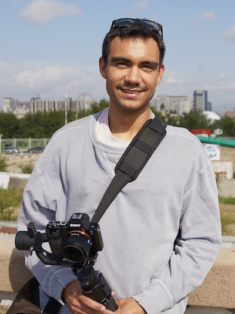

ryan reede


about
Hey there. I'm Ryan and I call the colorful and diverse city of Los Angeles, home. Growing up with access to tools like Photoshop and After Effects taught me things about computers, creativity and problem-solving that play a vital role in my life every day.
I devote my time and energy to making technology more accesible for everyone. I think that spatial computing (AR/VR/XR) is the most ergonomic, creative and powerful human-computer interaction paradigm yet and the stakes are very high for responsible use of it. At Teleportal, we are working to ensure a privacy and accesibility-focused future for spatial computing. At Tecnolatinx XR Labs, we bring emerging tech like VR headsets into classrooms so students with no access to VR otherwise, can create and wonder.
For fun I like to cook, run and draw. Plastic Beach is my favorite record and The Iron Giant is my favorite film. I am far from perfect, but I do my best to learn from my mistakes and be a better me each day. Practice makes perfect.
Thanks for reading and say hello please :)
stuff
-
TeleportalTeleportal creates tools to make creating AR/VR software easier.
-
Tecnolatinx XR LabsTecnolatinx XR Labs (TLX) makes emerging technology (AR/VR) more accessible by providing lab space and curriculum to students from underserved communities. TLX students learn 3D art, programming, instruct courses and gain economic mobility through having a direct understanding of what the future of work looks like.
-
Abominable (DreamWorks Animation, 2019)Feature-length animated film. Credit: Production Technology (Pipeline) Technical Director.
-
Jurassic World VR (VRC, 2018)LBE Multiplayer VR motion simulator ride at Dave and Busters. Credit: Software Engineer.
-
Follow Me Dragon (VRC, 2017)Virtual Pet application and Apple ARKit/iOS 11 launch title. Credit: Software Engineer.
-
Joycestick (Boston College, 2016)VR adaption of James Joyce’s Ulysses built by an interdisciplinary team of 30 students from Boston College, MIT, Berklee School of Music and Northeastern University. Credit: Teaching Assistant, Designer
-
Mod of Cards (Boston College, 2015)6-episode web series inspired by House of Cards with a cast and crew of 31 students. Credit: Producer, Cinematographer.
speaking
-
IASIL 2017, Singapore.In August of 2017, I spoke at the International Association for the Study of Irish Literatures conference at Nanyang Technological University (NTU) about our digital humanities project, Joycestick. To an audience of educators from around the world, I presented information on how interactive narratives can be produced for Virtual Reality and how to replicate the production effort of Joycestick at other undergraduate institutions. LINK: https://www.straitstimes.com/lifestyle/arts/get-into-a-novel-via-virtual-reality
-
GDC 2019, San Francisco, CA.In March of 2019, Joycestick was given the opportunity to present at the 2019 Game Developers Conference. My portion of our 3-person talk was (a) a post-mortem on the project from my perspective as the producer and teaching assistant, and (b) thoughts on how more diverse talent pipelines for indiscipline projects can be built. LINK: bit.ly/2Un5euK
-
LXiA/TLX Career Day, Los Angeles, CA.In June of 2019, I presented a 30-minute trip through the feature animation production pipeline to inspire young students to learn more about 3D graphics and consider careers in the industry.